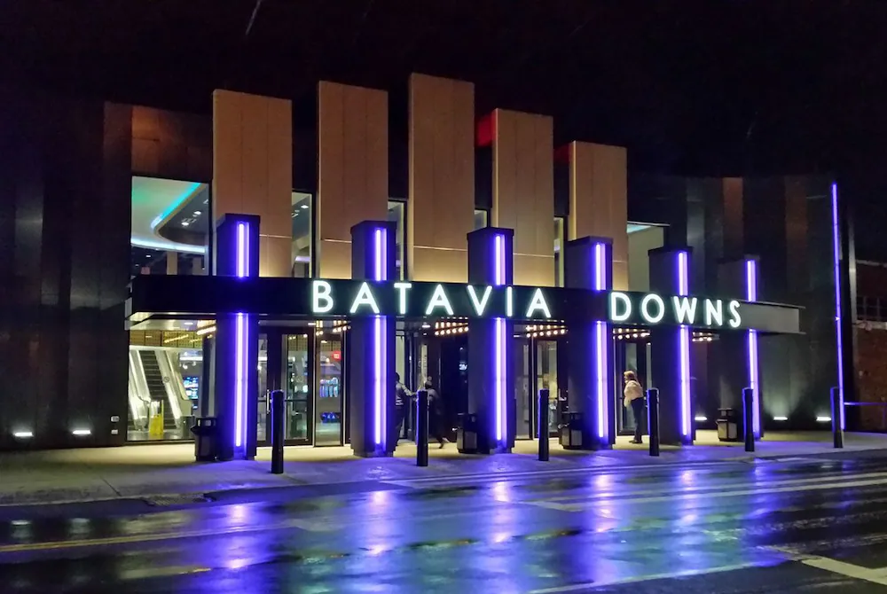
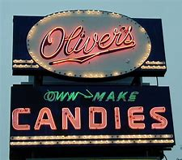
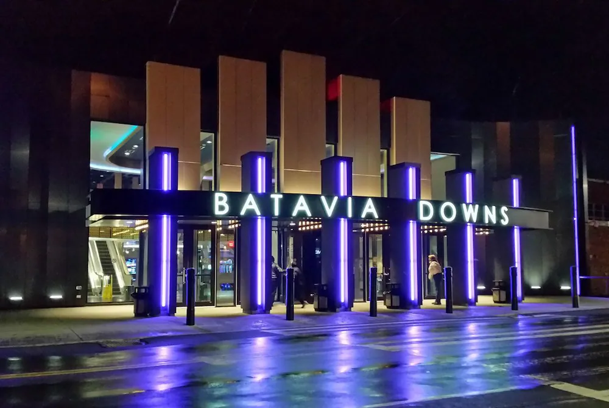
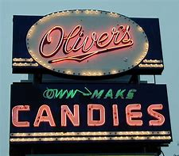

Batavia, located on the Tonawanda Creek at the forCentennial Logomer junction of two major Indian trails, was founded in 1801 by Joseph Ellicott, resident agent for the Holland Land Company. Four years earlier, the Holland Land Company had purchased 3.5 million acres including the current site of Batavia from Robert Morris, “Financier of the American Revolution,” who in turn had acquired the land from the State of Massachusetts. The Seneca Nation, with the exception of reservations existing still today, in exchange for a payment of $100,000 ceded its rights to this land in the 1797 Treaty of Big Tree.
Batavia is located closely to Buffalo, New York, go Buffalo Bills! It is also quite close to Lake Ontario, and Toronto, Canada, and the natural maple syrup you can buy is to die for.

1. You could go to the Batavia Downs, and watch the horse races, maybe do a bit of gambling if that suits your fancy.
2. Or you could visit Oliver's Candies where they make homemade candy.
3. And if city scapes aren't your style then there's plenty of country land you'll come across, just be careful that you down leave the town borders.
 



For more information, City of Batavia NY
Or book at trip to Batavia at Booking.com
Created by: Aubrey Burns